Article
De novo design of luciferases using deep learning
https://doi.org/10.1038/s41586-023-05696-3
Received: 19 January 2022; Accepted: 3 January 2023; Published online: 22 February 2023
Open access. Check for updates
1Department of Biochemistry, University of Washington, Seattle, WA, USA. 2Institute for Protein Design, University of Washington, Seattle, WA, USA. 3Department of Biomolecular Engineering, University of California, Santa Cruz, CA, USA. 4Howard Hughes Medical Institute, University of Washington, Seattle, WA, USA. 5Department of Chemistry and Biochemistry, University of California, Los Angeles, CA, USA. 6School of Chemistry, Xi’an Key Laboratory of Sustainable Energy Materials Chemistry, MOE Key Laboratory for Nonequilibrium Synthesis and Modulation of Condensed Matter, Xi’an Jiaotong University, Xi’an, China. 7These authors contributed equally: Andy Hsien-Wei Yeh, Christoffer Norn. ✉e-mail: hsyeh@ucsc.edu; dabaker@uw.edu
De novo enzyme design has sought to introduce active sites and substrate-binding pockets that are predicted to catalyse a reaction of interest into geometrically compatible native scaffolds1,2, but has been limited by a lack of suitable protein structures and the complexity of native protein sequence–structure relationships. Here we describe a deep-learning-based ‘family-wide hallucination’ approach that generates large numbers of idealized protein structures containing diverse pocket shapes and designed sequences that encode them. We use these scaffolds to design artificial luciferases that selectively catalyse the oxidative chemiluminescence of the synthetic luciferin substrates diphenylterazine3 and 2-deoxycoelenterazine. The designed active sites position an arginine guanidinium group adjacent to an anion that develops during the reaction in a binding pocket with high shape complementarity. For both luciferin substrates, we obtain designed luciferases with high selectivity; the most active of these is a small (13.9 kDa) and thermostable (with a melting temperature higher than 95 °C) enzyme that has a catalytic efficiency on diphenylterazine (\(k_{\mathrm{cat}}/K_m = 10^6\,\mathrm{M}^{-1}\,\mathrm{s}^{-1}\)) comparable to that of native luciferases, but a much higher substrate specificity. The creation of highly active and specific biocatalysts from scratch with broad applications in biomedicine is a key milestone for computational enzyme design, and our approach should enable generation of a wide range of luciferases and other enzymes.
Bioluminescent light produced by the enzymatic oxidation of a luciferin substrate by luciferases is widely used for bioassays and imaging in biomedical research. Because no excitation light source is needed, luminescent photons are produced in the dark; this results in higher sensitivity than fluorescence imaging in live animal models and in biological samples in which autofluorescence or phototoxicity is a concern4,5. However, the development of luciferases as molecular probes has lagged behind that of well-developed fluorescent protein toolkits for a number of reasons: (i) very few native luciferases have been identified6,7; (ii) many of those that have been identified require multiple disulfide bonds to stabilize the structure and are therefore prone to misfolding in mammalian cells8; (iii) most native luciferases do not recognize synthetic luciferins with more desirable photophysical properties9; and (iv) multiplexed imaging to follow multiple processes in parallel using mutually orthogonal luciferase–luciferin pairs has been limited by the low substrate specificity of native luciferases10,11.
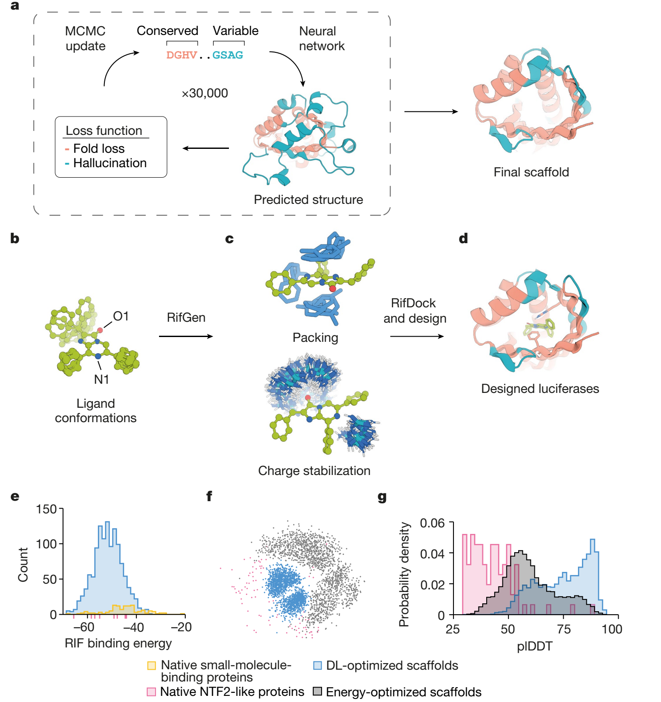
We sought to use de novo protein design to create luciferases that are small, highly stable, well-expressed in cells, specific for one substrate and need no cofactors to function. We chose a synthetic luciferin, diphenylterazine (DTZ), as the target substrate because of its high quantum yield, red-shifted emission3, favourable in vivo pharmacokinetics12,13 and lack of required cofactors for light emission. Previous computational enzyme design efforts have primarily repurposed native protein scaffolds in the Protein Data Bank (PDB)1,2, but there are few native structures with binding pockets appropriate for DTZ, and the effects of sequence changes on native proteins can be unpredictable (designed helical bundles have also been used as enzyme scaffolds14–16, but these are limited in number and most do not have pockets that are suitable for DTZ binding). To circumvent these limitations, we set out to generate large numbers of small and stable protein scaffolds with pockets of the appropriate size and shape for DTZ, and with clear sequence–structure relationships to facilitate subsequent active-site incorporation. To identify protein folds that are capable of hosting such pockets, we first docked DTZ into 4,000 native small-molecule-binding proteins. We found that many nuclear transport factor 2 (NTF2)-like folds have binding pockets with appropriate shape complementarity and size for DTZ placement (pink dashes in Fig. 1e), and hence selected the NTF2-like superfamily as the target topology.
Family-wide hallucination
Native NTF2 structures have a range of pocket sizes and shapes but also contain features that are not ideal, such as long loops that compromise stability. To create large numbers of ideal NTF2-like structures, we developed a deep-learning-based ‘family-wide hallucination’ approach that integrates unconstrained de novo design17,18 and Rosetta sequence-design approaches19 to enable the generation of an essentially unlimited number of proteins that have a desired fold (Fig. 1a). The family-wide hallucination approach used the de novo sequence and structure discovery capability of unconstrained protein hallucination17,18 for loop and variable regions, and structure-guided sequence optimization for core regions. We used the trRosetta structure prediction neural network20, which is effective in identifying experimentally successful de-novo-designed proteins and hallucinating new globular proteins of diverse topologies. Starting from the sequences of 2,000 naturally occurring NTF2s, we carried out Monte Carlo searches in sequence space, at each step making a sequence change and predicting the structure using trRosetta. As the loss function guiding search, we used the confidence of the neural network in the predicted structure (as in our previous free hallucination study) supplemented with a topology-specific loss function over core residue pair geometries (see Supplementary Methods); in the loop regions, we also allowed the number of residues to vary, which resulted in short near ideal loops. To further encode structural specificity, we incorporated buried, long-range hydrogen-bonding networks. The resulting 1,615 family-wide hallucinated NTF2 scaffolds provided more shape-complementary binding pockets for DTZ than did native small-molecule-binding proteins (Fig. 1e). This method samples protein backbones that are closer to native NTF2-like proteins (Fig. 1f) and that have better scaffold quality metrics than those produced in a previous non-deep-learning energy-based approach21 (Fig. 1g).
De novo design of luciferases for DTZ
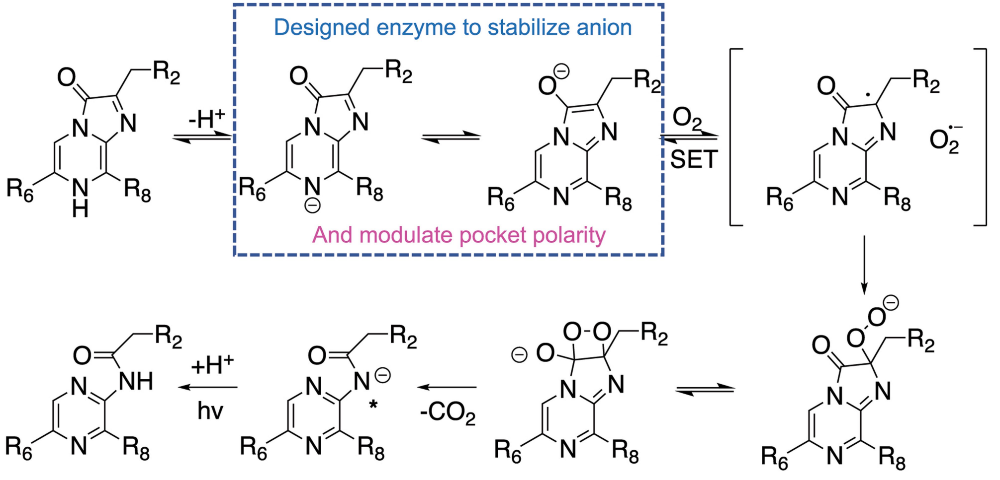
Computational enzyme design generally starts from an ideal active site or theozyme consisting of protein functional groups surrounding the reaction transition state that is then matched into a set of existing scaffolds1,2. However, the detailed catalytic geometry of native marine luciferases is not well understood because only a handful of apo structures and no holo structures with luciferin substrates have been solved (at the time of this study)22–24. Both quantum chemistry calculations25,26 and experimental data27,28 suggest that the chemiluminescent reaction proceeds through an anionic species and that the polarity of the surroundings can substantially alter the free energy of the subsequent single-electron transfer (SET) process with triplet molecular oxygen (\({}^3\mathrm{O}_2\)). Guided by these data (Extended Data Fig. 1), we sought to design a shape-complementary catalytic site that stabilizes the anionic state of DTZ and lowers the SET energy barrier, assuming that the downstream dioxetane light emitter thermolysis steps are spontaneous. To stabilize the anionic state, we focused on the placement of the positively charged guanidinium group of an arginine residue to stabilize the developing negative charge on the imidazopyrazinone group.
To computationally design such active sites into large numbers of hallucinated NTF2 scaffolds, we first generated an ensemble of anionic DTZ conformers (Fig. 1b). Next, around each conformer, we used the RifGen method29,30 to enumerate rotamer interaction fields (RIFs) on three-dimensional grids consisting of millions of placements of amino acid side chains making hydrogen-bonding and nonpolar interactions with DTZ (Fig. 1c). An arginine guanidinium group was placed adjacent to the N1 atom of the imidazopyrazinone group to stabilize the negative charge. RifDock was then used to dock each DTZ conformer and associated RIF in the central cavity of each scaffold to maximize protein–DTZ interactions. An average of eight side-chain rotamers, including an arginine residue to stabilize the anionic imidazopyrazinone core, were positioned in each pocket (Supplementary Fig. 2a). For the top 50,000 docks with the most favourable side chain–DTZ interactions, we optimized the remainder of the sequence using RosettaDesign (Fig. 1d) for high-affinity binding to DTZ with a bias towards the naturally observed sequence variation to ensure foldability. During the design process, pre-defined hydrogen-bond networks (HBNets) in the scaffolds were kept intact for structural specificity and stability, and interactions of these HBNet side chains with DTZ were explicitly required in the RifDock step to ensure the preorganization of residues that are essential for catalysis. In the first sequence-design step, the identities of all RIF and HBNet residues were kept fixed, and the surrounding residues were optimized to hold the side chain–DTZ interactions in place and maintain structural specificity. In the second sequence-design step, the RIF residue identities (except the arginine) were also allowed to vary, as Rosetta can identify apolar and aromatic packing interactions that were missed in the RIF owing to binning effects. During sequence design, the scaffold backbone, side chains and DTZ substrate were allowed to relax in Cartesian space. After sequence optimization, the designs were filtered on the basis of ligand-binding energy, protein–ligand hydrogen bonds, shape complementarity and contact molecular surface, and 7,648 designs were selected and ordered as pooled oligos for experimental screening.
Identification of active luciferases
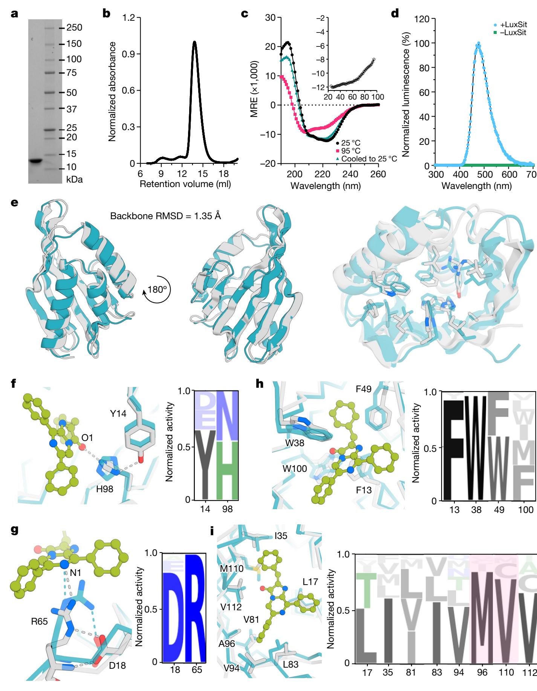
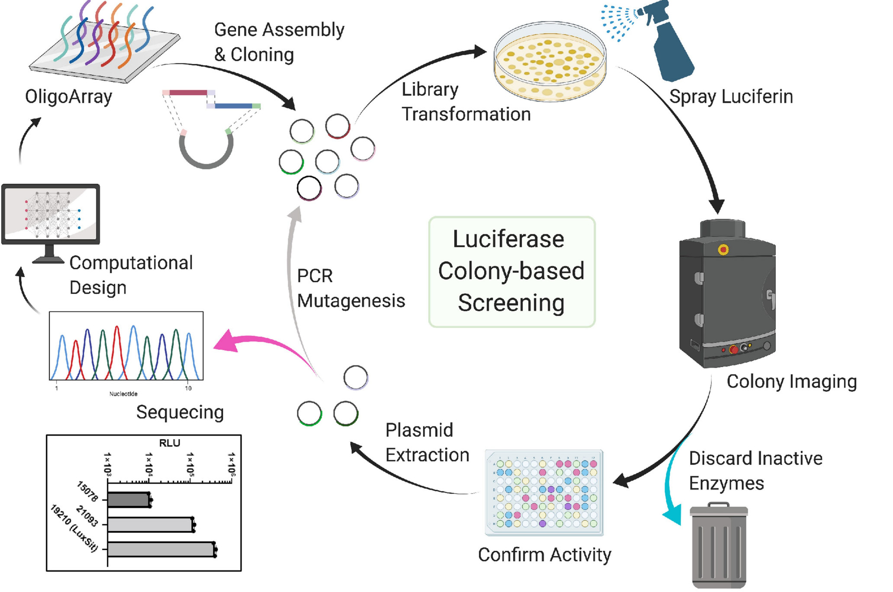
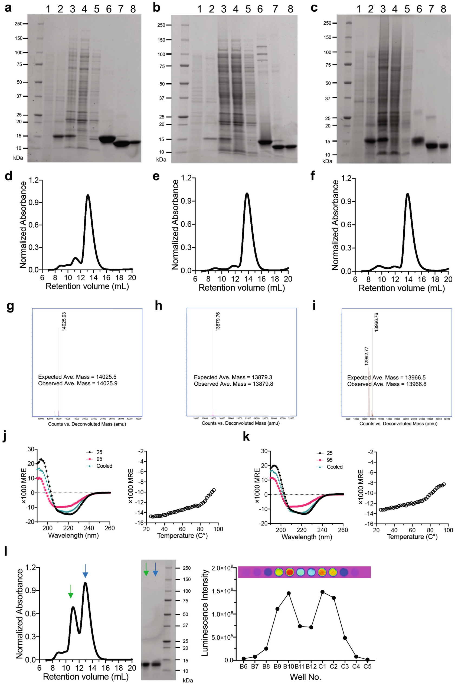
Oligonucleotides encoding the two halves of each design were assembled into full-length genes and cloned into an Escherichia coli expression vector (see Supplementary Methods). A colony-based screening method was used to directly image active luciferase colonies from the library and the activities of selected clones were confirmed using a 96-well plate expression (Extended Data Fig. 2). Three active designs were identified; we refer to the most active of these as LuxSit (from the Latin lux sit, ‘let light exist’), which at 117 residues (13.9 kDa) is, to our knowledge, smaller than any previously described luciferase. Biochemical analysis, including SDS–PAGE and size-exclusion chromatography (Fig. 2a,b and Extended Data Fig. 3), indicated that LuxSit is highly expressed in E. coli, soluble and monomeric. Circular dichroism (CD) spectroscopy showed a strong far-ultraviolet CD signature, suggesting an organized α-β structure. CD melting experiments showed that the protein is not fully unfolded at 95 °C, and that the full structure is regained when the temperature is dropped (Fig. 2c). Incubation of LuxSit with DTZ resulted in luminescence with an emission peak at around 480 nm (Fig. 2d), consistent with the DTZ chemiluminescence spectrum. Although we were not able to determine the crystal structure of LuxSit, the structure predicted by AlphaFold2 (ref. 31) is very close to the design model at the backbone level (root-mean-square deviation \((\mathrm{RMSD}) = 1.35\,\text{\AA}\)) and over the side chains interacting with the substrate (Fig. 2e). The designed LuxSit active site contains Tyr14–His98 and Asp18–Arg65 dyads, with the imidazole nitrogen atoms of His98 making hydrogen-bond interactions with Tyr14 and the O1 atom of DTZ (Fig. 2f). The centre of the Arg65 guanidinium cation is 4.2 Å from the N1 atom of DTZ and Asp18 forms a bidentate hydrogen bond to the guanidinium group and backbone N–H of Arg65 (Fig. 2g).
De novo design of luciferases for h-CTZ
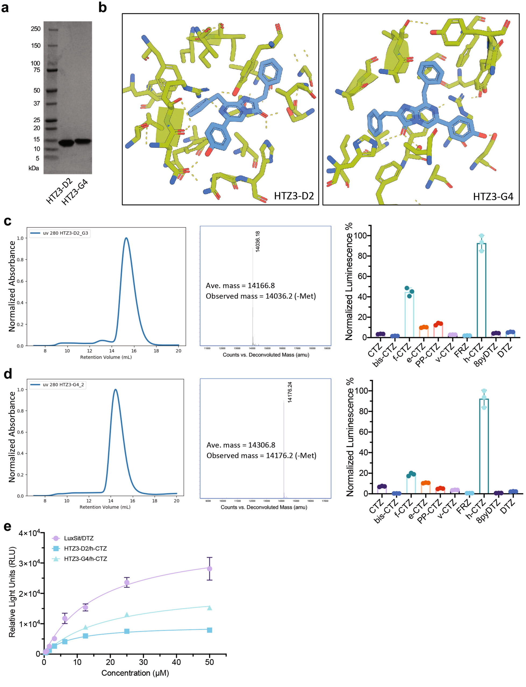
We next sought to apply the knowledge gained from designing LuxSit to create 2-deoxycoelenterazine (h-CTZ)-specific luciferases. Because the molecular shape of h-CTZ is different from that of DTZ, we created an additional set of NTF2 superfamily scaffolds (see Supplementary Methods) with matching pocket shapes and high model confidence (AlphaFold2-predicted local-distance difference test \((\mathrm{pLDDT}) > 92\)). We then installed catalytic sites in these scaffolds and designed the first shell-protein side chain–h-CTZ interactions using the histidine and arginine substrate interaction geometries that were most successful in the first round for DTZ. To design the remainder of the sequence, we used ProteinMPNN32, which can result in better stability, solubility and accuracy than RosettaDesign. After filtering on the basis of the AlphaFold2-predicted pLDDT, Cα RMSD, contact molecular surface and Rosetta-computed binding energies (see Supplementary Methods), we selected and experimentally expressed 46 designs in E. coli and identified 2 (HTZ3-D2 and HTZ3-G4) that had luciferase activity with the h-CTZ luciferin substrate. Both designs were highly soluble, monodisperse and monomeric, and the luciferase activities were of the same order of magnitude as LuxSit (Extended Data Fig. 4). The success rate increased from 3/7,648 to 2/46 sequences in the second round, probably owing to the knowledge of active-site geometry from the first round and the increased robustness of the ProteinMPNN method of sequence design.
Optimization of luciferase activity
To better understand the contributions to the catalysis of LuxSit, the most active of our designs, we constructed a site-saturation mutagenesis (SSM) library in which each residue in the substrate-binding pocket was mutated to every other amino acid one at a time (see Supplementary Methods), and determined the effect of each mutation on luciferase activity. Figure 2f–i shows the amino acid preferences at key positions.
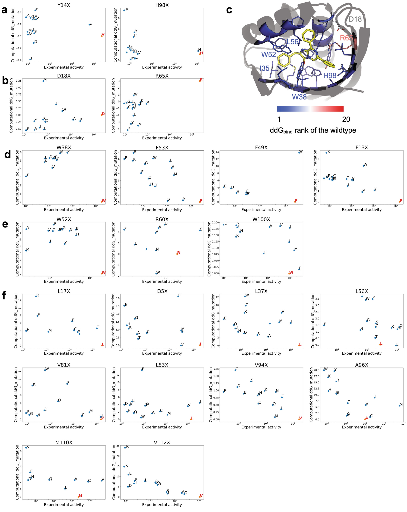
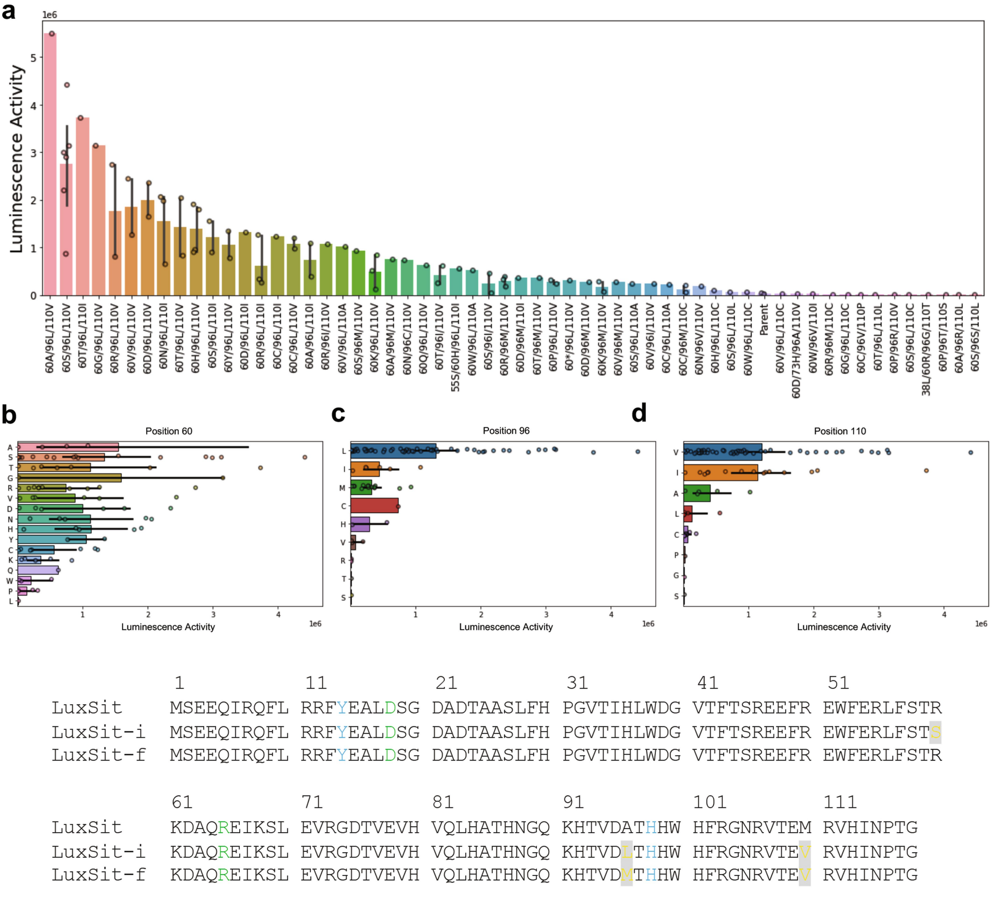
Arg65 is highly conserved (Fig. 2g), and its dyad partner Asp18 can only be mutated to Glu (which reduces activity), suggesting that the carboxylate–Arg65 hydrogen bond is important for luciferase activity. In the Tyr14–His98 dyad (Fig. 2f), Tyr14 can be substituted with Asp and Glu, and His98 can be replaced with Asn. As all active variants had hydrogen-bond donors and acceptors at these positions, the dyads might help to mediate the electron and proton transfer required for luminescence. Hydrophobic (Fig. 2i) and π-stacking (Fig. 2h) residues at the binding interface tolerate other aromatic or aliphatic substitutions and generally prefer the amino acid in the original design, consistent with model-based affinity predictions of mutational effects (Extended Data Fig. 5). The A96M and M110V mutants (highlighted in pink) increase activity by 16-fold and 19-fold, respectively, over LuxSit (Supplementary Table 1). Optimization guided by these results yielded LuxSit-f (A96M/M110V), with a flash-type emission kinetic, and LuxSit-i (R60S/A96L/M110V), with a photon flux more than 100-fold higher than that of LuxSit (Extended Data Fig. 6). Overall, the active-site-saturation mutagenesis results support the design model, with the Tyr14–His98 and Asp18–Arg65 dyads having key roles in catalysis and the substrate-binding pocket largely conserved.
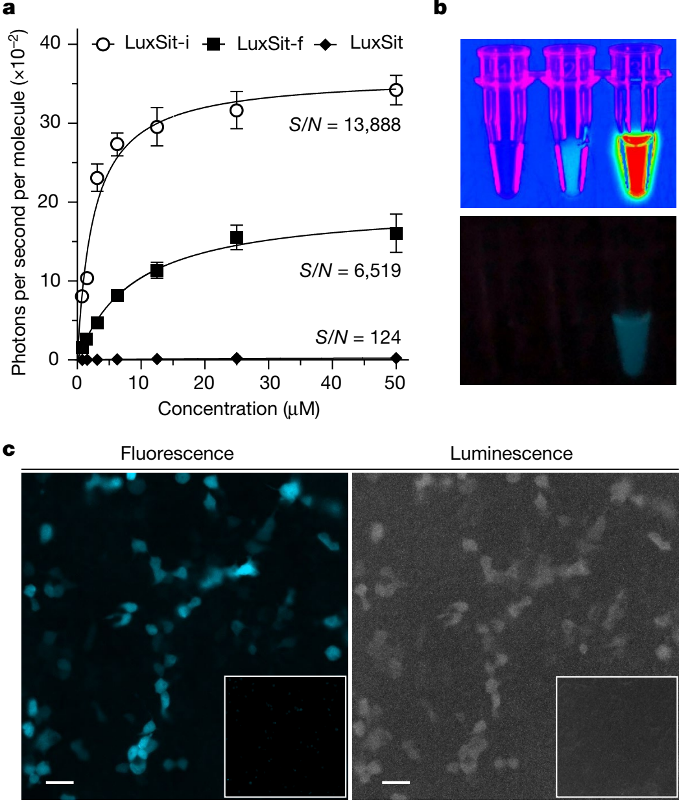
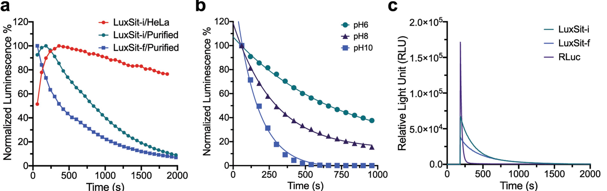
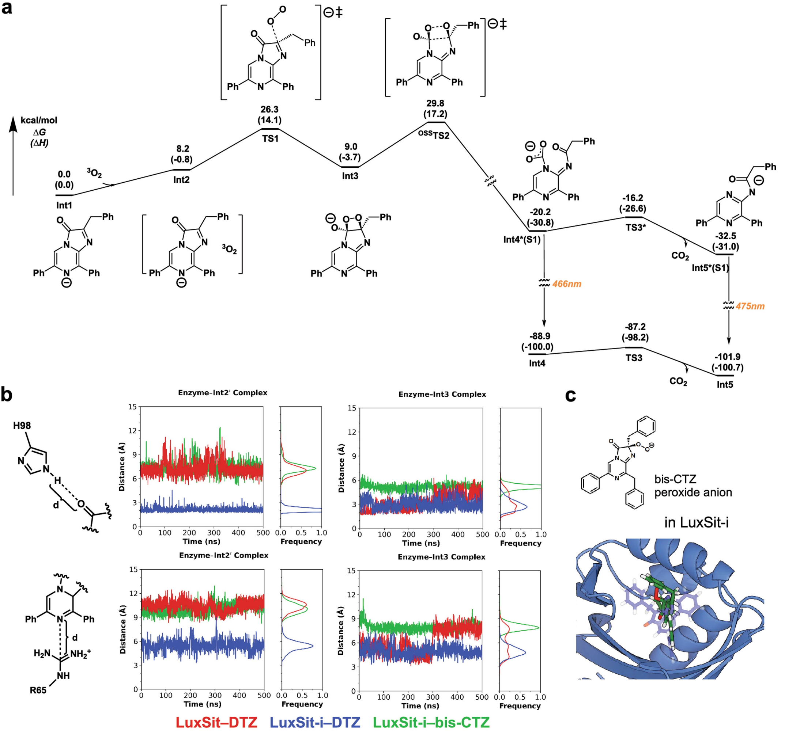
The most active catalysts, LuxSit-i (Extended Data Fig. 3b,e,h) and LuxSit-f (Extended Data Fig. 3c,f,i), were both expressed solubly in E. coli at high levels and are monomeric (some dimerization was observed at the high protein concentration; Extended Data Fig. 3l) and thermostable (Extended Data Fig. 3j,k). Similar to native luciferases that use CTZ, the apparent Michaelis constants (Km) of both LuxSit-i and LuxSit-f are in the low-micromolar range (Fig. 3a) and the luminescent signal decays over time owing to fast catalytic turnover (Extended Data Fig. 7a). LuxSit-i is a very efficient enzyme, with a catalytic efficiency \((k_{\mathrm{cat}}/K_m)\,\text{of}\,10^6\,\mathrm{M}^{-1}\,\mathrm{s}^{-1}\). The luminescence signal is readily visible to the naked eye (Fig. 3b), and the photon flux (photons per second) is 38% greater than that of the native Renilla reniformis luciferase (RLuc) (Supplementary Table 2). The DTZ luminescent reaction catalysed by LuxSit-i is pH-dependent (Extended Data Fig. 7b), consistent with the proposed mechanism. We used a combination of density functional theory (DFT) calculations and molecular dynamics (MD) simulations to investigate the basis for LuxSit activity in more detail; the results support the anion-stabilization mechanism (Extended Data Fig. 8a and Supplementary Fig. 3a) and suggest that LuxSit-i provides better DTZ transition-state charge stabilization than LuxSit (Extended Data Fig. 8b).
Cell imaging and multiplexed bioassay
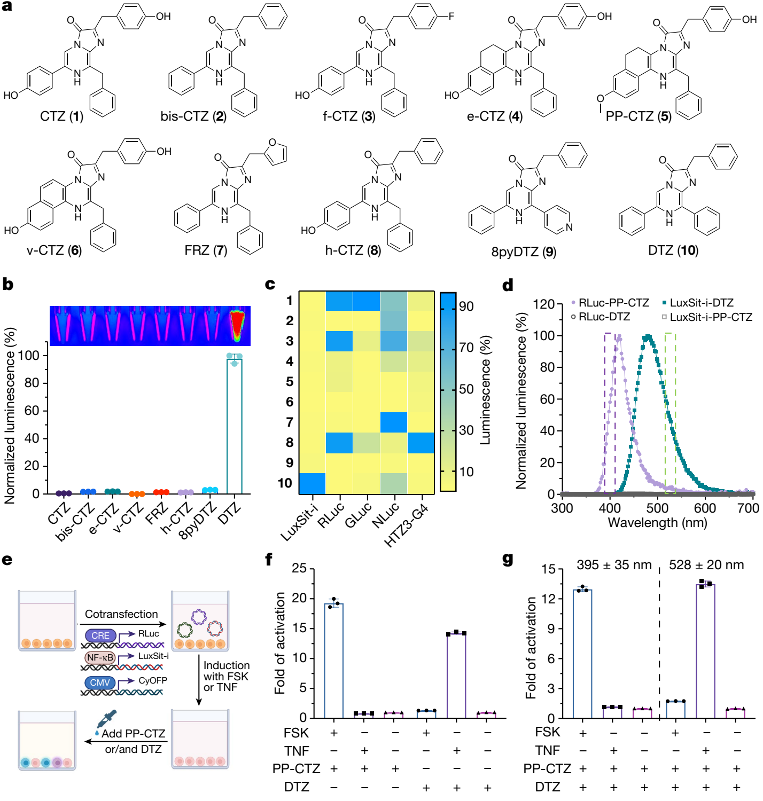
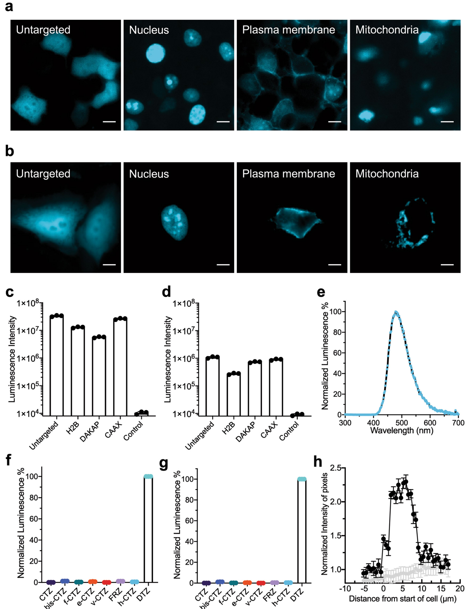
As luciferases are commonly used genetic tags and reporters for cell biological studies, we evaluated the expression and function of LuxSit-i in live mammalian cells. HEK293T cells expressing LuxSit-i-mTagBFP2 showed DTZ-specific luminescence (Fig. 3c), which was maintained after targeting of LuxSit-i-mTagBFP2 to the nucleus, membrane and mitochondria (Extended Data Fig. 9). Native and previously engineered luciferases are quite promiscuous, with activity on many luciferin substrates (Fig. 4a,c and Supplementary Fig. 4); this is possibly a result of their large and open pockets (a luciferase with high specificity to one luciferin substrate has been difficult to control even with extensive directed evolution33,34). By contrast, LuxSit-i exhibited exquisite specificity for its target luciferin, with 50-fold selectivity for DTZ over bis-CTZ (which differs only in one benzylic carbon; MD simulations suggest that this arises from greater transition-state shape complementarity (Extended Data Fig. 8b,c and Supplementary Fig. 3b,c)), 28-fold selectivity over 8pyDTZ (differing only in one nitrogen atom) and more than 100-fold selectivity over other luciferin substrates (Fig. 4b). One of our active design for h-CTZ (HTZ3-G4) was also highly specific for its target substrate (Fig. 4c and Extended Data Fig. 4d). Overall, the specificity of our designed luciferases is much greater than that of native luciferases35,36 or previously engineered luciferases37 (Supplementary Table 5).
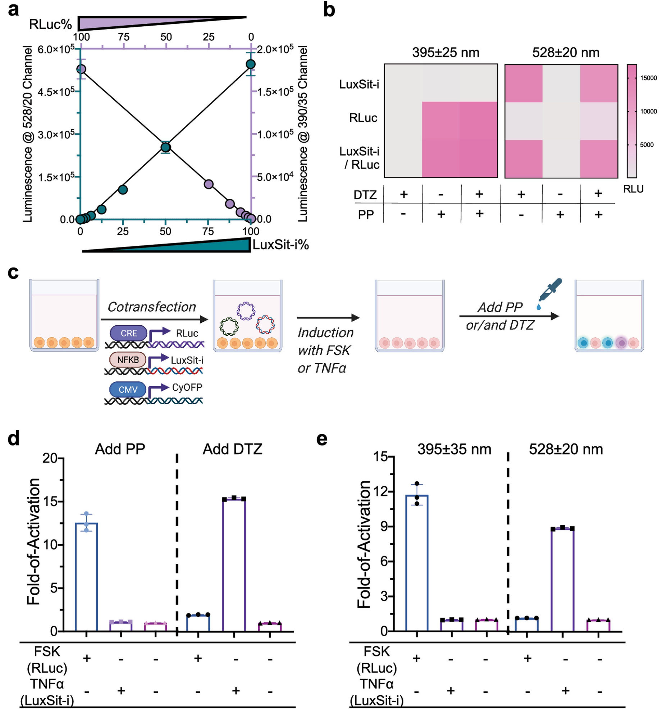
We reasoned that the high substrate specificity of LuxSit-i could allow the multiplexing of luminescent reporters through substrate-specific or spectrally resolved luminescent signals (Fig. 4d and Extended Data Fig. 10a,b). To investigate this possibility, we placed LuxSit-i downstream of the NF-κB response element and RLuc downstream of the cAMP response element (Fig. 4e). The addition of activators (TNF) of the NF-κB signaling pathway resulted in luminescence when cells were incubated with DTZ, while the luminescence of PP-CTZ (the substrate of RLuc) was observed only when the cAMP–PKA pathway was activated (Fig. 4f). Because DTZ and PP-CTZ emit luminescence at different wavelengths, they can in principle be combined and the two signals can be deconvoluted through spectral analysis. Indeed, we observed that activating the NF-κB signaling resulted in luminescence at the DTZ wavelength, while the addition of cAMP–PKA pathway activators (FSK) generated luminescence at the PP-CTZ wavelength, allowing us to simultaneously assess the activation of the two signaling pathways in the same sample with either cell lysates (Fig. 4g) or intact HEK293T cells (Extended Data Fig. 10c–e) by providing both substrates together. Thus, the high substrate specificity of LuxSit-i enables multiplexed reporting of diverse cellular responses.
Conclusion
Computational enzyme design has been constrained by the number of available scaffolds, which limits the extent to which catalytic configurations and enzyme–substrate shape complementarity can be achieved14–16. The use of deep learning to produce large numbers of de-novo-designed scaffolds here eliminates this restriction, and the more accurate RoseTTAfold (ref. 38) and AlphaFold2 (ref. 31) should enable protein scaffolds to be generated even more effectively through family-wide hallucination and other approaches18,39. The diversity of shapes and sizes of scaffold pockets enabled us to consider a range of catalytic geometries and to maximize reaction intermediate–enzyme shape complementarity; to our knowledge, no native luciferases have folds similar to LuxSit, and the enzyme has high specificity for a fully synthetic luciferin substrate that does not exist in nature. With the incorporation of three substitutions that provide a more complementary pocket to stabilize the transition state, LuxSit-i has higher activity than any previous de-novo-designed enzyme, with a \(k_{\mathrm{cat}}/K_m\,(10^6\,\mathrm{M}^{-1}\,\mathrm{s}^{-1})\) in the range of native luciferases. This is a notable advance for computational enzyme design, as tens of rounds of directed evolution were required to obtain catalytic efficiencies in this range for a designed retroaldolase, and the structure was remodelled considerably40; by contrast, the predicted differences in ligand–side-chain interactions between LuxSit and LuxSit-i are very subtle (Supplementary Fig. 2b; achieving such high activities directly from the computer remains a challenge in computational enzyme design). The small size, stability and robust folding of LuxSit-i makes it well-suited in luciferase fusions to proteins of interest and as a genetic tag for capacity-limited viral vectors. On the basic science side, the small size, simplicity and high activity of LuxSit-i make it an excellent model system for computational and experimental studies of luciferase catalytic mechanism. Extending the approach used here to create similarly specific luciferases for synthetic luciferin substrates beyond DTZ and h-CTZ would considerably extend the multiplexing opportunities illustrated in Fig. 4 (particularly with the recent advances in microscopy41), and enable a new generation of multiplexed luminescent toolkits. More generally, our family-wide hallucination method opens up an almost unlimited number of scaffold possibilities for substrate binding and catalytic residue placement, which is particularly important when the reaction mechanism and how to promote it are not completely understood: many alternative structural and catalytic hypotheses can be readily enumerated with shape and chemically complementary binding pockets but different catalytic residue placements. Although luciferases are unique in catalysing the emission of light, the chemical transformation of substrates into products is common to all enzymes, and the approach developed here should be readily applicable to a wide variety of chemical reactions.
Online content
Any methods, additional references, Nature Portfolio reporting summaries, source data, extended data, supplementary information, acknowledgements, peer review information; details of author contributions and competing interests; and statements of data and code availability are available at https://doi.org/10.1038/s41586-023-05696-3.
1. Jiang, L. et al. De novo computational design of retro-aldol enzymes. Science 319, 1387–1391 (2008).
2. Rothlisberger, D. et al. Kemp elimination catalysts by computational enzyme design. Nature 453, 190–195 (2008).
3. Yeh, H. W. et al. Red-shifted luciferase–luciferin pairs for enhanced bioluminescence imaging. Nat. Methods 14, 971–974 (2017).
4. Love, A. C. & Prescher, J. A. Seeing (and using) the light: recent developments in bioluminescence technology. Cell Chem. Biol. 27, 904–920 (2020).
5. Syed, A. J. & Anderson, J. C. Applications of bioluminescence in biotechnology and beyond. Chem. Soc. Rev. 50, 5668–5705 (2021).
6. Yeh, H.-W. & Ai, H.-W. Development and applications of bioluminescent and chemiluminescent reporters and biosensors. Annu. Rev. Anal. Chem. 12, 129–150 (2019).
7. Zambito, G., Chawda, C. & Mezzanotte, L. Emerging tools for bioluminescence imaging. Curr. Opin. Chem. Biol. 63, 86–94 (2021).
8. Markova, S. V., Larionova, M. D. & Vysotski, E. S. Shining light on the secreted luciferases of marine copepods: current knowledge and applications. Photochem. Photobiol. 95, 705–721 (2019).
9. Jiang, T. Y., Du, L. P. & Li, M. Y. Lighting up bioluminescence with coelenterazine: strategies and applications. Photochem. Photobiol. Sci. 15, 466–480 (2016).
10. Michelini, E. et al. Spectral-resolved gene technology for multiplexed bioluminescence and high-content screening. Anal. Chem. 80, 260–267 (2008).
11. Rathbun, C. M. et al. Parallel screening for rapid identification of orthogonal bioluminescent tools. ACS Cent. Sci. 3, 1254–1261 (2017).
12. Yeh, H.-W., Wu, T., Chen, M. & Ai, H.-W. Identification of factors complicating bioluminescence imaging. Biochemistry 58, 1689–1697 (2019).
13. Su, Y. C. et al. Novel NanoLuc substrates enable bright two-population bioluminescence imaging in animals. Nat. Methods 17, 852–860 (2020).
14. Lombardi, A., Pirro, F., Maglio, O., Chino, M. & DeGrado, W. F. De novo design of four-helix bundle metalloproteins: one scaffold, diverse reactivities. Acc. Chem. Res. 52, 1148–1159 (2019).
15. Chino, M. et al. Artificial diiron enzymes with a de novo designed four‐helix bundle structure. Eur. J. Inorg. Chem. 2015, 3352–3352 (2015).
16. Basler, S. et al. Efficient Lewis acid catalysis of an abiological reaction in a de novo protein scaffold. Nat. Chem. 13, 231–235 (2021).
17. Anishchenko, I. et al. De novo protein design by deep network hallucination. Nature 600, 547–552 (2021).
18. Wang, J. et al. Scaffolding protein functional sites using deep learning. Science 377, 387–394 (2022).
19. Norn, C. et al. Protein sequence design by conformational landscape optimization. Proc. Natl Acad. Sci. USA. 118, e2017228118 (2021).
20. Yang, J. Y. et al. Improved protein structure prediction using predicted interresidue orientations. Proc. Natl Acad. Sci. USA 117, 1496–1503 (2020).
21. Basanta, B. et al. An enumerative algorithm for de novo design of proteins with diverse pocket structures. Proc. Natl Acad. Sci. USA 117, 22135–22145 (2020).
22. Loening, A. M., Fenn, T. D. & Gambhir, S. S. Crystal structures of the luciferase and green fluorescent protein from Renilla reniformis. J. Mol. Biol. 374, 1017–1028 (2007).
23. Tomabechi, Y. et al. Crystal structure of nanoKAZ: the mutated 19 kDa component of Oplophorus luciferase catalyzing the bioluminescent reaction with coelenterazine. Biochem. Biophys. Res. Commun. 470, 88–93 (2016).
24. Wu, N. et al. Solution structure of Gaussia luciferase with five disulfide bonds and identification of a putative coelenterazine binding cavity by heteronuclear NMR. Sci. Rep. 10, 20069 (2020).
25. Ding, B. W. & Liu, Y. J. Bioluminescence of firefly squid via mechanism of single electron-transfer oxygenation and charge-transfer-induced luminescence. J. Am. Chem. Soc. 139, 1106–1119 (2017).
26. Isobe, H., Yamanaka, S., Kuramitsu, S. & Yamaguchi, K. Regulation mechanism of spin-orbit coupling in charge-transfer-induced luminescence of imidazopyrazinone derivatives. J. Am. Chem. Soc. 130, 132–149 (2008).
27. Kondo, H. et al. Substituent effects on the kinetics for the chemiluminescence reaction of 6-arylimidazo[1,2-a]pyrazin-3(7H)-ones (Cypridina luciferin analogues): support for the single electron transfer (SET)-oxygenation mechanism with triplet molecular oxygen. Tetrahedron Lett. 46, 7701–7704 (2005).
28. Branchini, B. R. et al. Experimental support for a single electron-transfer oxidation mechanism in firefly bioluminescence. J. Am. Chem. Soc. 137, 7592–7595 (2015).
29. Dou, J. Y. et al. De novo design of a fluorescence-activating β-barrel. Nature 561, 485–491 (2018).
30. Cao, L. et al. Design of protein-binding proteins from the target structure alone. Nature 605, 551–560 (2022).
31. Jumper, J. et al. Highly accurate protein structure prediction with AlphaFold. Nature 596, 583–589 (2021).
32. Dauparas, J. et al. Robust deep learning-based protein sequence design using ProteinMPNN. Science 378, 49–56 (2022).
33. Yeh, H.-W. et al. ATP-independent bioluminescent reporter variants to improve in vivo imaging. ACS Chem. Biol. 14, 959–965 (2019).
34. Xiong, Y. et al. Engineered amber-emitting nano luciferase and its use for immunobioluminescence imaging in vivo. J. Am. Chem. Soc. 144, 14101–14111 (2022).
35. Bhaumik, S. & Gambhir, S. S. Optical imaging of Renilla luciferase reporter gene expression in living mice. Proc. Natl Acad. Sci. USA 99, 377–382 (2002).
36. Szent-Gyorgyi, C., Ballou, B. T., Dagnal, E. & Bryan, B. Cloning and characterization of new bioluminescent proteins. In Proc. SPIE 3600, Biomedical Imaging: Reporters, Dyes, and Instrumentation (eds. Bornhop, D. J., Contag, C. H. & Sevick-Muraca, E. M.) https://doi.org/10.1117/12.351015 (SPIE, 1999).
37. Hall, M. P. et al. Engineered luciferase reporter from a deep sea shrimp utilizing a novel imidazopyrazinone substrate. ACS Chem. Biol. 7, 1848–1857 (2012).
38. Baek, M. et al. Accurate prediction of protein structures and interactions using a three-track neural network. Science 373, 871-+ (2021).
39. Wicky, B. I. M. et al. Hallucinating symmetric protein assemblies. Science 378, 56–61 (2022).
40. Giger, L. et al. Evolution of a designed retro-aldolase leads to complete active site remodeling. Nat. Chem. Biol. 9, 494–498 (2013).
41. Yao, Z. et al. Multiplexed bioluminescence microscopy via phasor analysis. Nat. Methods 19, 893–898 (2022).
Publisher’s note Springer Nature remains neutral with regard to jurisdictional claims in published maps and institutional affiliations.
Open Access This article is licensed under a Creative Commons Attribution 4.0 International License, which permits use, sharing, adaptation, distribution and reproduction in any medium or format, as long as you give appropriate credit to the original author(s) and the source, provide a link to the Creative Commons licence, and indicate if changes were made. The images or other third party material in this article are included in the article’s Creative Commons licence, unless indicated otherwise in a credit line to the material. If material is not included in the article’s Creative Commons licence and your intended use is not permitted by statutory regulation or exceeds the permitted use, you will need to obtain permission directly from the copyright holder. To view a copy of this licence, visit http://creativecommons.org/licenses/by/4.0/.
© The Author(s) 2023
Reporting summary
Further information on research design is available in the Nature Portfolio Reporting Summary linked to this article.
Data availability
Source data for Figs. 2–4 are available online. The gene sequence for LuxSit-i has been deposited to GenBank under the accession number OP820699. See Supplementary Data for design models of LuxSit and LuxSit-i. Codon-optimized plasmids encoding LuxSit-i for bacterial and mammalian expression are available through Addgene. Source data are provided with this paper.
Code availability
The Rosetta macromolecular modelling suite (https://www.rosettacommons.org) is freely available to academic and non-commercial users. Commercial licences for the suite are available through the University of Washington Technology Transfer Office. The source code for RIF docking implementation is freely available at https://github.com/rifdock/rifdock. All relevant scripts and an accompanying Jupiter notebook for family-wide hallucination scaffold generation are available here: https://files.ipd.uw.edu/pub/luxSit/scaffold_generation.tar.gz. All generated scaffolds are available here: https://files.ipd.uw.edu/pub/luxSit/scaffolds.tar.gz. Computational design scripts for the luciferase libraries are available here: https://files.ipd.uw.edu/pub/luxSit/luciferase_designs_methods.zip.
Acknowledgements We thank B. Wicky and R. Kibler for assistance on CD measurements; X. Li for help with mass spectrometry analysis of proteins; D. Feldman for the initial investigation of cell imaging; L. Milles for optimizing the golden gate assembly protocol; and the National Natural Science Foundation of China (22103060) for providing computational resources that were used in quantum mechanics and MD simulations. Some figure panels were partially created with BioRender.com (Fig. 4e and Extended Data Figs. 2 and 10c). Research reported in this publication was partially supported by the National Institute of Biomedical Imaging and Bioengineering of the National Institutes of Health under award number K99EB031913. The content is solely the responsibility of the authors and does not necessarily represent the official views of the National Institutes of Health. We acknowledge funding from the Howard Hughes Medical Institute (Y.K., B.C. and D.B.); the Henrietta and Aubrey Davis Endowed Professorship in the University of Washington Department of Biochemistry (D.B.); the NIH Pathway to Independence Award (A.H.-W.Y., K99EB031913); the United World Antiviral Research Network (UWARN) (one of the Centers for Research in Emerging Infectious Diseases; CREIDs) NIAID 1 U01 AI151698-01 (D.B. and A.H.-W.Y.); the Audacious Project at the Institute for Protein Design (D.B. and A.H.-W.Y.); the Open Philanthropy Project Improving Protein Design Fund (D.B.); the Novo Nordisk Foundation (C.N., NNF18OC0030446), a Washington Research Foundation Fellowship (S.P.); E. and W. Schmidt, by recommendation of the Schmidt Futures program (D.T., G.R.L., J.Z.Z., L.C., S.H., M.D., L.C. and D.B.); and the National Science Foundation (K.N.H., D.E. and P.M., CHE-1764328, and OCI-1053575 to XSEDE).
Author contributions D.B. supervised this work. A.H.-W.Y. conceived the project and performed the experimental characterization. A.H.-W.Y., Y.K. and C.N. conceptualized and investigated the initial design strategies and A.H.-W.Y. performed the computational design of luciferases. C.N. conceptualized and implemented the family-wide hallucination pipeline. C.N., D.T., S.J.P. and I.A. performed the scaffold design. S.J.P. performed the ProteinMPNN sequence design of NTF2 scaffolds. K.N.H. mentored D.E. and P.M. for MD and quantum mechanics calculations and contributed to the writing of the mechanistic parts of the manuscript. G.R.L. developed the computational SSM simulation. J.Z.Z. prepared mammalian cells and performed microscopy imaging. B.C. and L.C. integrated the tuning file function into RifDock. J.D. developed ProteinMPNN. S.H. helped assemble the designed library. M.D. and L.C. assisted with protein expression and purification. A.H.-W.Y., C.N. and D.B. wrote the initial manuscript. All authors discussed the results and contributed to the final manuscript.
Competing interests A.H.-W.Y., C.N., Y.K., D.T., S.J.P., I.A. and D.B. are co-inventors in several provisional patent applications (application numbers 63/300171, 63/300178, 63/381922 and 63/381924 submitted by the University of Washington) covering the de novo luciferases and protein scaffolds described in this Article. A.H.-W.Y., C.N., J.Z. and D.B. are stockholders of Monod Bio, a company that aims to develop the inventions described in this manuscript. The remaining authors declare no competing interests.
Additional information
Supplementary information The online version contains supplementary material available at https://doi.org/10.1038/s41586-023-05696-3.
Correspondence and requests for materials should be addressed to Andy Hsien-Wei Yeh or David Baker.
Peer review information Nature thanks the anonymous reviewers for their contribution to the peer review of this work. Peer reviewer reports are available.
Reprints and permissions information is available at http://www.nature.com/reprints.
Nature Portfolio Reporting Summary
Corresponding author(s): Andy Hsien-Wei Yeh and David Baker
Last updated by author(s): Nov 15, 2022
Nature Portfolio wishes to improve the reproducibility of the work that we publish. This form provides structure for consistency and transparency in reporting. For further information on Nature Portfolio policies, see our Editorial Policies and the Editorial Policy Checklist.
Statistics
For all statistical analyses, confirm that the following items are present in the figure legend, table legend, main text, or Methods section.
| n/a | Confirmed | Item |
|---|---|---|
| [x] | The exact sample size (n) for each experimental group/condition, given as a discrete number and unit of measurement. | |
| [x] | A statement on whether measurements were taken from distinct samples or whether the same sample was measured repeatedly. | |
| [x] | The statistical test(s) used AND whether they are one- or two-sided. Only common tests should be described solely by name; describe more complex techniques in the Methods section. | |
| [x] | A description of all covariates tested. | |
| [x] | A description of any assumptions or corrections, such as tests of normality and adjustment for multiple comparisons. | |
| [x] | A full description of the statistical parameters including central tendency (e.g. means) or other basic estimates (e.g. regression coefficient) AND variation (e.g. standard deviation) or associated estimates of uncertainty (e.g. confidence intervals). | |
| [x] | For null hypothesis testing, the test statistic (e.g. F, t, r) with confidence intervals, effect sizes, degrees of freedom and P value noted. Give P values as exact values whenever suitable. | |
| [x] | For Bayesian analysis, information on the choice of priors and Markov chain Monte Carlo settings. | |
| [x] | For hierarchical and complex designs, identification of the appropriate level for tests and full reporting of outcomes. | |
| [x] | Estimates of effect sizes (e.g. Cohen's d, Pearson's r), indicating how they were calculated. |
Our web collection on statistics for biologists contains articles on many of the points above.
Software and code
Policy information about availability of computer code.
Data collection
The source code for RIF docking implementation is freely available at https://github.com/rifdock/rifdock.
All relevant scripts and an accompanying Jupiter notebook for family-wide hallucination scaffold generation are available here: https://files.ipd.uw.edu/pub/luxSit/scaffold_generation.tar.gz
All generated scaffolds are available here: https://files.ipd.uw.edu/pub/luxSit/scaffolds.tar.gz
Design scripts for active LuxSit are available here: https://files.ipd.uw.edu/pub/luxSit/luciferase_designs_methods.zip
Data analysis
For manuscripts utilizing custom algorithms or software that are central to the research but not yet described in published literature, software must be made available to editors and reviewers. We strongly encourage code deposition in a community repository (e.g. GitHub). See the Nature Portfolio guidelines for submitting code & software for further information.
Data
Policy information about availability of data.
All manuscripts must include a data availability statement. This statement should provide the following information, where applicable:
- Accession codes, unique identifiers, or web links for publicly available datasets
- A description of any restrictions on data availability
- For clinical datasets or third party data, please ensure that the statement adheres to our policy
Human research participants
Policy information about studies involving human research participants and Sex and Gender in Research.
| Reporting on sex and gender | N/A |
|---|---|
| Population characteristics | N/A |
| Recruitment | N/A |
| Ethics oversight | N/A |
Note that full information on the approval of the study protocol must also be provided in the manuscript.
Field-specific reporting
Please select the one below that is the best fit for your research. If you are not sure, read the appropriate sections before making your selection.
[x] Life sciences [ ] Behavioural & social sciences [ ] Ecological, evolutionary & environmental sciences
For a reference copy of the document with all sections, see nature.com/documents/nr-reporting-summary-flat.pdf
Life sciences study design
All studies must disclose on these points even when the disclosure is negative.
| Sample size | No statistical methods were used to pre-determine the sample size. The number of designs we ordered is limited by the availability of adaptor pairs and the size of Oligo pool. |
|---|---|
| Data exclusions | No sample was excluded from the data analysis. |
| Replication | Results were reproduced using different batches of pure proteins on different days. Coomassie-stained SDS PAGE gels were done at least twice for each experiment. Microscopic fluorescence and luminescence images were repeated in biological triplicate with similar results. |
| Randomization | For the cellular imaging and assay, cells were randomly separated into experimental groups. |
| Blinding | Researchers were not blinded to the experiments described in this study. |
Reporting for specific materials, systems and methods
We require information from authors about some types of materials, experimental systems and methods used in many studies. Here, indicate whether each material, system or method listed is relevant to your study. If you are not sure if a list item applies to your research, read the appropriate section before selecting a response.
| Materials & experimental systems | n/a | Involved in the study | Methods | n/a | Involved in the study |
|---|---|---|---|---|---|
| Antibodies | [x] | ChIP-seq | [x] | ||
| Eukaryotic cell lines | [x] | Flow cytometry | [x] | ||
| Palaeontology and archaeology | [x] | MRI-based neuroimaging | [x] | ||
| Animals and other organisms | [x] | ||||
| Clinical data | [x] | ||||
| Dual use research of concern | [x] |
Eukaryotic cell lines
Policy information about cell lines and Sex and Gender in Research.
| Cell line source(s) | HEK293T (ATCC, CRL-11268) and HeLa (ATCC, CCL-2) |
|---|---|
| Authentication | Autheticated by vendors. Cells were not authenticated in the lab. |
| Mycoplasma contamination | All cells were tested negative for Mycoplasma by the provider, and it was not further confirmed in the lab. |
| Commonly misidentified lines (See ICLAC register) | no commonly misidentified cell lines were used in the study. |